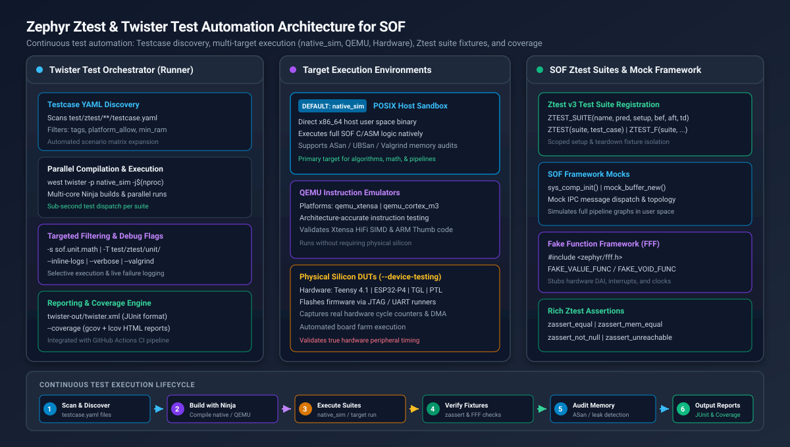
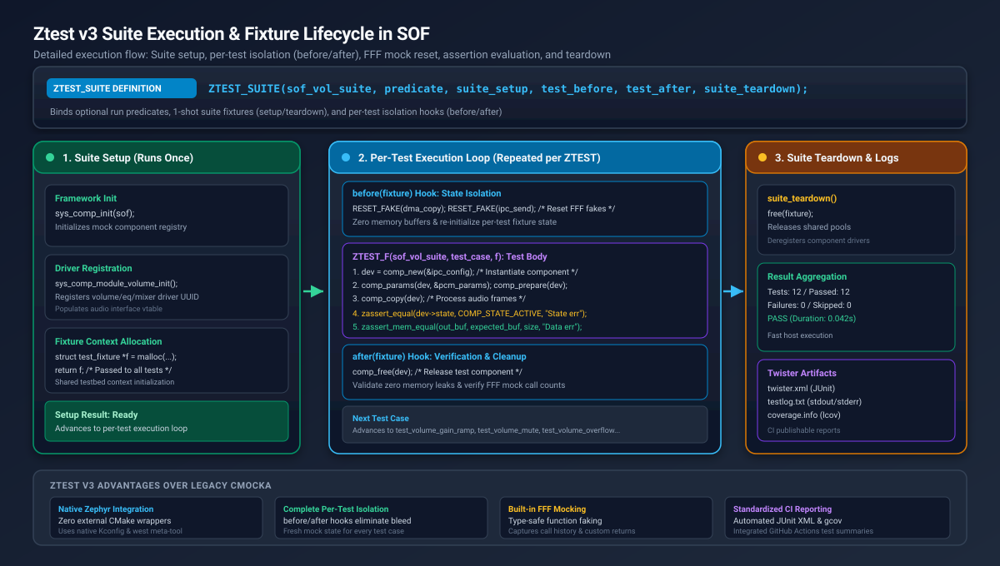

Unit Testing with Zephyr Ztest & Twister#
Overview and Testing Strategy in SOF#
Sound Open Firmware (SOF) employs a rigorous, layered testing pyramid to guarantee algorithmic correctness, real-time performance, and stability across diverse silicon targets (including Intel CAVS/ACE DSPs, NXP i.MX microcontrollers, ARM Cortex-M platforms such as Teensy 4.1, and RISC-V bridges like ESP32-P4).
At the foundation of this testing pyramid are unit tests authored using Zephyr’s native Ztest framework and orchestrated by the Twister test runner.
Testing Tier |
Execution Target |
Scope & Focus |
Turnaround Speed |
|---|---|---|---|
1. Unit Tests (Ztest) |
|
Isolated DSP algorithms, math routines, ring buffers, memory allocators, FFF mocks. |
Milliseconds (Sub-second per suite) |
2. Host Testbench |
Host binary ( |
Pipeline WAV-in to WAV-out processing, multi-component DAG execution, bit-exactness. |
Seconds (Full pipeline streams) |
3. QEMU Simulation |
|
Instruction-accurate SIMD (Xtensa HiFi, ARM Thumb), cache behavior, and register logic. |
Seconds to Minutes |
4. Hardware Loopbacks |
ESP32-P4 / Teensy 4.1 |
Real DAI interfaces (I2S, PDM, S/PDIF, SoundWire), hardware clocking, TDM slots. |
Minutes |
5. Target DUT & ktest |
Real Silicon DUTs (TGL, PTL, ARL) |
Full system audio playback/capture, driver probing, IPC message pumps, and bisection. |
Minutes to Hours |
Why Ztest and Twister?#
Upstream Zephyr Integration: Ztest and Twister are standard Zephyr RTOS components. SOF unit tests leverage upstream Kconfig, CMake, and test harness infrastructure without proprietary test wrappers or external dependencies.
Deprecation of Legacy CMocka: Prior versions of SOF relied on the CMocka framework coupled with custom wrapper scripts. CMocka has been retired in favor of Ztest v3, bringing native fixture support, type-safe assertions, and seamless CI integration.
Rapid Test-Driven Development (TDD): Tests run natively in host user space using the
native_simtarget. Developers can write a failing test, implement the firmware logic, and verify the fix in seconds without flashing physical hardware.Continuous Integration Enforcement: Twister automatically executes on every pull request in GitHub Actions, generating standardized JUnit XML reports and enforcing line/branch coverage metrics.
System Architecture#
The SOF unit testing architecture separates the execution orchestration handled by Twister from the test suites and mock frameworks executed inside the target sandboxes.
{kind=link}

Figure 317 Zephyr Ztest & Twister Test Automation Architecture for SOF#
Architecture Components#
Twister Test Runner (Host Orchestrator):
Discovery Engine: Recursively parses
testcase.yamlspecification files acrosstest/ztest/to build an execution matrix.Filter & Selector: Evaluates platform allowlists, test tags (e.g.
unit,math,audio), and Kconfig dependencies.Parallel Build & Run Engine: Compiles test applications with Ninja and executes binaries concurrently across available host CPU cores.
Report Generator: Produces unified JUnit XML reports (
twister.xml), detailed failure logs, and Gcov/lcov code coverage analyses.
Target Execution Environments:
``native_sim`` (POSIX Host Sandbox): Compiles SOF C logic directly as a native 64-bit Linux executable. Executes in user space in milliseconds. Supports compiler sanitizers (ASan, UBSan) and memory checkers (Valgrind).
QEMU Emulators (``qemu_xtensa``, ``qemu_cortex_m3``, ``qemu_riscv64``): Runs tests within instruction-accurate virtual processors, verifying architecture-specific assembly and SIMD intrinsics.
Physical Silicon (``–device-testing``): Automatically flashes and executes test suites on real target hardware via JTAG or serial runners.
SOF Ztest Suites & Mock Framework:
Ztest v3 Test Harness: Provides modular test suite definitions, fixtures, assertions, and test filtering.
Fake Function Framework (FFF): Embedded stubbing library (
<zephyr/fff.h>) providing type-safe function mocking, call history inspection, and custom return sequences.SOF Subsystem Mocks: Simulates the SOF component framework (
sys_comp_init()), mock memory allocators (fast-get,objpool), mock audio buffers, and IPC messaging in user space.
Ztest v3 Lifecycle and Fixture Model#
Ztest v3 provides a structured fixture lifecycle to guarantee state isolation between test cases and prevent side-effects from bleeding across tests.
{kind=link}

Figure 318 Ztest v3 Suite Execution & Fixture Lifecycle in SOF#
Lifecycle Stages#
Suite Declaration (``ZTEST_SUITE``):
The test suite is registered using the
ZTEST_SUITEmacro, binding the suite name to optional predicates and lifecycle callback functions:ZTEST_SUITE(suite_name, predicate, suite_setup, test_before, test_after, suite_teardown);
predicate: Optional function pointer returning boolean. If false, the entire suite is skipped at runtime.suite_setup: Executed once before any test in the suite runs.test_before: Executed immediately before each individual test case.test_after: Executed immediately after each individual test case.suite_teardown: Executed once after all tests in the suite complete.
Suite Setup Hook (``suite_setup``):
Initializes shared framework infrastructure:
Initializes the SOF component registry via
sys_comp_init(sof).Registers component driver interfaces (e.g.
sys_comp_module_volume_interface_init()).Allocates shared fixture context structures passed to test cases.
Per-Test Isolation Hooks (``before`` / ``after``):
``test_before(fixture)``: Resets Fake Function Framework (FFF) call histories using
RESET_FAKE(), clears audio buffers, and initializes input test data.``test_after(fixture)``: Verifies that components transitioned to the expected terminal states, checks for mock expectation compliance, and frees temporary test buffers.
Suite Teardown Hook (``suite_teardown``):
Releases shared fixture memory, deregisters components, and releases allocated memory pools.
Assertion Reference#
Ztest provides comprehensive assertion macros that print file, line number, and custom diagnostic messages upon failure:
Macro |
Description & Verification |
|---|---|
|
Verifies that boolean expression |
|
Verifies that boolean expression |
|
Verifies scalar equality ( |
|
Verifies scalar inequality ( |
|
Asserts that pointer |
|
Asserts that pointer |
|
Verifies that two memory buffers are bitwise identical for |
|
Verifies that scalar |
|
Immediately fails if an unexpected code branch is reached. |
|
Soft precondition assumption. If false, skips the test rather than failing. |
Mocking Hardware and Subsystems with FFF#
SOF unit tests rely on the Fake Function Framework (FFF) (embedded in
Zephyr under <zephyr/fff.h>) to mock hardware drivers, DMA controllers,
interrupts, and IPC messaging.
Declaring and Using Fakes#
To mock a function, declare the fake in a header or test source file:
#include <zephyr/ztest.h>
#include <zephyr/fff.h>
/* Initialize FFF globals */
DEFINE_FFF_GLOBALS;
/* Define fake function: int dma_copy(struct dma_chan *chan, uint32_t bytes) */
FAKE_VALUE_FUNC(int, dma_copy, void *, uint32_t);
/* Define void fake: void ipc_msg_send(struct ipc_msg *msg) */
FAKE_VOID_FUNC(ipc_msg_send, void *);
Using FFF in Test Cases#
FFF fakes record call history, captured arguments, and can return custom values or sequences:
static void test_before_hook(void *fixture)
{
/* Reset fake call histories before every test */
RESET_FAKE(dma_copy);
RESET_FAKE(ipc_msg_send);
}
ZTEST(sof_driver_suite, test_dma_transfer_success)
{
/* Configure fake to return success */
dma_copy_fake.return_val = 0;
int ret = trigger_audio_transfer(1024);
/* Verify return value and mock invocation */
zassert_equal(ret, 0, "Transfer should succeed");
zassert_equal(dma_copy_fake.call_count, 1, "dma_copy must be called once");
zassert_equal(dma_copy_fake.arg1_val, 1024, "Byte count mismatch");
}
ZTEST(sof_driver_suite, test_dma_transfer_retry_on_failure)
{
/* Configure a return sequence: fail twice, then succeed */
int return_sequence[] = {-EIO, -EBUSY, 0};
SET_RETURN_SEQ(dma_copy, return_sequence, 3);
int ret = trigger_audio_transfer_with_retries(512);
zassert_equal(ret, 0, "Transfer should recover on 3rd attempt");
zassert_equal(dma_copy_fake.call_count, 3, "Expected 3 attempts");
}
Testcase Configuration: testcase.yaml#
Twister discovers test scenarios by parsing testcase.yaml files located
within test directories.
Specification Schema#
# SPDX-License-Identifier: BSD-3-Clause
# testcase.yaml definition for SOF unit tests
common:
# Tags applied to all test scenarios in this file
tags:
- unit
- audio
# Restrict to native simulation target for fast host execution
platform_allow:
- native_sim
# Required harness type
harness: ztest
tests:
sof.unit.audio.volume:
# Descriptive scenario metadata
extra_configs:
- CONFIG_SOF_VOLUME=y
- CONFIG_SOF_AUDIO_IPC=y
# Minimum RAM required for execution
min_ram: 32
# Filter expression based on Kconfig
filter: not CONFIG_SOC_SERIES_NONE
sof.unit.audio.volume.overflow:
extra_configs:
- CONFIG_SOF_VOLUME=y
- CONFIG_SOF_MATH_CHECK_OVERFLOW=y
tags:
- unit
- audio
- overflow
Configuration Keys Reference#
Key |
Type |
Description |
|---|---|---|
|
String |
Unique identifier for the test scenario. |
|
List of strings |
Keywords used by Twister’s |
|
List of strings |
Explicit list of supported platforms (e.g. |
|
List of strings |
Platforms on which this test must not run. |
|
List of strings |
Additional Kconfig options injected into |
|
List of strings |
Additional CMake arguments (e.g. |
|
String |
Test harness type. Set to |
|
Expression |
Boolean Kconfig expression. The test builds only if the expression evaluates to true. |
Running Unit Tests with Twister#
The west twister command provides a comprehensive command-line interface for
building and executing test suites.
Common Execution Commands#
Execute All Unit Tests on native_sim#
cd ~/work/sof
west twister -T test/ztest/unit/ -p native_sim --inline-logs
Target a Specific Test Suite Directory#
# Run all tests in the math directory
west twister -T test/ztest/unit/math/ -p native_sim
Run a Specific Test Scenario by Name#
# Target the specific scenario defined in testcase.yaml
west twister -T test/ztest/unit/ -s sof.unit.math.basic.arithmetic -p native_sim --inline-logs
Filter Tests by Tag#
# Execute all tests tagged with 'math'
west twister -T test/ztest/unit/ -t math -p native_sim
Run Parallel Execution Across Cores#
# Utilize all available CPU threads to build and run in parallel
west twister -T test/ztest/unit/ -p native_sim -j $(nproc) -c
Twister CLI Flags Reference#
Flag |
Purpose and Behavior |
|---|---|
|
Root directory scanned by Twister to locate |
|
Target execution platform (e.g. |
|
Selects a single scenario identifier defined in |
|
Filters scenarios matching the given tag string. |
|
Number of parallel build and test execution worker threads. |
|
Removes previous output directory ( |
|
Streams stdout and stderr output from failing tests directly to terminal. |
|
Increases diagnostic verbosity (repeat for higher verbosity: |
|
Enables Gcov instrumentation and generates coverage reports. |
|
Runs compiled |
Code Coverage and Memory Sanitation#
Generating Code Coverage Reports (Gcov & Lcov)#
Twister integrates natively with Gcov to measure statement, branch, and function coverage:
Execute Twister with the
--coverageflag:west twister -T test/ztest/unit/ -p native_sim --coverage -c
Generate a visual HTML coverage dashboard using
genhtml:genhtml -o twister-out/coverage_html/ twister-out/coverage.info
Open
twister-out/coverage_html/index.htmlin your browser to inspect line-by-line execution coverage.
Memory Auditing with AddressSanitizer (ASan)#
To catch memory corruption, buffer overflows, and use-after-free bugs before
they reach hardware, enable AddressSanitizer (ASan) in native_sim:
Add ASan options to
prj.confor pass them via Twister:CONFIG_ASAN=y CONFIG_UBSAN=y
Run Twister with inline logging:
west twister -T test/ztest/unit/ -p native_sim \ -c --inline-logs --extra-args="CONFIG_ASAN=y"
If an invalid memory access or stack-buffer-overflow occurs, ASan halts execution immediately and prints a detailed stack trace with source file line numbers.
Memory Leak Detection with Valgrind#
Run tests under Valgrind to identify uninitialized memory reads and memory leaks:
west twister -T test/ztest/unit/ -p native_sim --valgrind --inline-logs
Step-by-Step Developer Tutorials#
Tutorial 2: Testing an Audio Component with Mock Framework#
Below is a complete pattern for testing a volume audio processing component:
// SPDX-License-Identifier: BSD-3-Clause
#include <zephyr/ztest.h>
#include <rtos/sof.h>
#include <sof/audio/component.h>
#include <sof/audio/pipeline.h>
#include <sof/ipc/topology.h>
extern void sys_comp_module_volume_interface_init(void);
/* Fixture context struct */
struct volume_fixture {
struct comp_dev *dev;
struct comp_ipc_config config;
};
static void *volume_suite_setup(void)
{
struct sof *sof = sof_get();
sys_comp_init(sof);
/* Register volume component driver */
sys_comp_module_volume_interface_init();
struct volume_fixture *f = malloc(sizeof(*f));
return f;
}
static void volume_test_before(void *data)
{
struct volume_fixture *f = (struct volume_fixture *)data;
memset(&f->config, 0, sizeof(f->config));
f->config.id = 1;
f->config.type = SOF_COMP_VOLUME;
f->config.core = 0;
/* Create fresh component instance before each test */
f->dev = comp_new(&f->config);
zassert_not_null(f->dev, "Volume component creation failed");
}
static void volume_test_after(void *data)
{
struct volume_fixture *f = (struct volume_fixture *)data;
if (f->dev) {
comp_free(f->dev);
f->dev = NULL;
}
}
static void volume_suite_teardown(void *data)
{
free(data);
}
/* Register suite with complete fixture hooks */
ZTEST_SUITE(volume_comp_suite, NULL, volume_suite_setup,
volume_test_before, volume_test_after, volume_suite_teardown);
/* Test case: verify component initial state */
ZTEST_F(volume_comp_suite, test_volume_initial_state)
{
zassert_equal(fixture->dev->state, COMP_STATE_READY,
"Component state should be COMP_STATE_READY");
}
Tutorial 3: Debugging Failing Tests with GDB#
When a test crashes or fails an assertion, you can inspect it interactively with GDB:
Locate the compiled executable within the Twister output directory:
twister-out/native_sim/sof.unit.math.fixed_point/zephyr/zephyr.exe
Launch GDB:
gdb --args twister-out/native_sim/sof.unit.math.fixed_point/zephyr/zephyr.exe
Set breakpoints at test failure handlers:
(gdb) break z_ztest_abort (gdb) break q_multsr_32x32 (gdb) run (gdb) bt (gdb) print a (gdb) print b
Legacy CMocka to Ztest Migration Guide#
For developers migrating older SOF tests from the legacy CMocka framework:
Legacy CMocka Primitive |
Modern Zephyr Ztest Equivalent |
|---|---|
|
|
|
|
|
|
|
|
|
|
|
|
|
|
|
FFF: |
|
FFF: |
|
Ztest: |